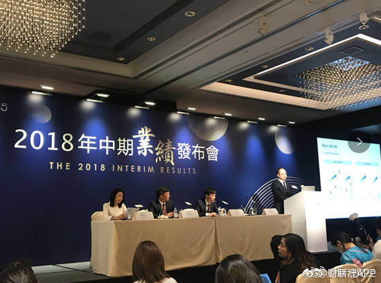
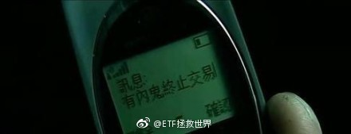

回复@asekiyoshi:资本利得出来A股将再跌30%。我不太相信会出这个。房产我都信，不信这个。//@asekiyoshi:内部消息，资本利得税与房产税一起开征@ETF拯救世界:不过中证500已经连跌五个月，本月下跌7%，估值是过去13年第三低。点位逼近我的理解极限4600-4700。半年报利润增速11%+。综上，空间真的不会太大了。
回复@挖龙脉的超级鹿鼎公:94年7月下跌29%是最低。96年12月下跌13%；96-99一直涨没感觉99是熊市，全年上涨19%。05年5月下跌8%。//@挖龙脉的超级鹿鼎公:这个不一定，96年,99年，05年都没有@ETF拯救世界:根据历史经验，最终的底部，还缺少一根月线大阴线……历史还会重演吗？
回复@黄连树:2005年5月8.5%，2008年10月25%，2012年11月创业板12%，2013年6月沪深300是15%。//@黄连树:过去熊市的月度大阴线出现在几月？@ETF拯救世界:根据历史经验，最终的底部，还缺少一根月线大阴线……历史还会重演吗？
回复@李蕾_小兽:明天肯定不跌。跌了请你吃饭。//@李蕾_小兽:e大今天不加仓，估计明天还的跌呀@ETF拯救世界:我说且慢良心，同意不同意。可以回想两件事。第一个，当年合宜申购的时候。是不是全网热推，每家销售机构都在抢销售份额。且慢发了个东西，跟你说，我们这里申购也可以，但是去兴全网站上申购费率更合适。第二个，当年独角兽基金申购的时候。是不是全网热推，每家销售机构都在奋力宣传。且慢发了个东西，跟你说，我这里申购也行，但可以谨慎一点。——说这句话压力很大你可能不清楚。一个公司的价值观，从一举一动可以看出来。核心是为了自己做大规模赚钱，还是首先考虑投资者赚不赚钱，这个区别还是很大的。这些话我不太愿意说。但确实是真心的感受。
我说且慢良心，同意不同意。可以回想两件事。第一个，当年合宜申购的时候。是不是全网热推，每家销售机构都在抢销售份额。且慢发了个东西，跟你说，我们这里申购也可以，但是去兴全网站上申购费率更合适。第二个，当年独角兽基金申购的时候。是不是全网热推，每家销售机构都在奋力宣传。且慢发了个东西，跟你说，我这里申购也行，但可以谨慎一点。——说这句话压力很大你可能不清楚。一个公司的价值观，从一举一动可以看出来。核心是为了自己做大规模赚钱，还是首先考虑投资者赚不赚钱，这个区别还是很大的。这些话我不太愿意说。但确实是真心的感受。
回复@天生歌者不唱歌:这么良心的平台难道不应该支持一下，以后都在且慢申购吗。//@天生歌者不唱歌:回复@舍豆:基金现在手续费和管理费很低了，能拿出来分的已经很少了，而且蚂蚁财富那里分流特别严重，且慢的客户还是少数@ETF拯救世界:我再说句可能招人烦的话。其实大多数人，80%或者90%的人吧，不适合为别人做资产管理。也可能你自己做的还行，但你也很有可能不适合给别人管理资产。更别说有好多人自己做的也根本不行。所以，如果私募平台不管不顾只想多发展几个人来自己这里发私募，多募集资金，其实对于投资者来讲毫无好处。作为平台，也许一时可以做大，但最终会很麻烦，因为投资者都赔了。从自身利益出发，还是从投资者能不能赚到钱出发，这是两种截然不同的思路。也许前者会做大，会赚很多钱，但我认为，真正有责任感的人，还是应该多想想后者。
非常谨慎孙宏斌……@财联社APP:【孙宏斌 ：买融创股票可能会比买我们的房子空间大很多】融创孙宏斌表示：我们投哪个城市，你如果不住，就没必要买，还是买我们股票吧！中国城市房地产发展很不均衡，有的城市在调控前，就已经涨到很高位，我们还是会优先考虑房价比较低的城市，我们还是会很谨慎地投资。买股票可能会比买我们的房子，空间会大很多很多。
回复@Henry00:且不说股票本身的问题，这样的，监管层怎么可能允许它爆炒。随时干你，敢火中取栗的可以说是人中龙凤了。//@Henry00:长生跌停了，昨天后悔没买的哪位不知道还后悔么@ETF拯救世界:今天会很刺激啊。
回复@愿赌服输K:无限现金流在这个区域每半个月买一次红利 300增强 500 医药 消费。之后视情况再增加创业和信息//@愿赌服输K:非杠精 只是想问一下E大 假如有无限现金流现在应该怎么买可以收益最大化@ETF拯救世界:之前说过，我们的价值仓位已经买了很大了，不急着继续大力买。毕竟你家不是开矿的，资源有限，不像别人是无限资源买买买。好钢用在刀刃上。趋势方面。截至目前，所有指数趋势全部向下。本来有一只本周有突破的可能，但这两天又跌回下降趋势。各指数压力线压力极强，很难突破。所以趋势仓位也不会买入。除非这一个小时有特大暴跌，今天中午大概率不会发，因为收盘后要看一下数据。踏踏实实的。
回复@LaOldCat:2008年伊利跌了67%，2013年 茅台跌了45%。你觉得鹅厂现在遭遇了当年这两家公司的困境了？我刚才那条说的是高科技企业，伊利和茅台是高科技？阅读理解能力需要提高。//@LaOldCat:e大，小粉关注你很久了，可你现在又是在教育刚才发了鹅厂那条的自己吗正反面都是你的立场，根本不败啊@ETF拯救世界: 
之前说过，我们的价值仓位已经买了很大了，不急着继续大力买。毕竟你家不是开矿的，资源有限，不像别人是无限资源买买买。好钢用在刀刃上。趋势方面。截至目前，所有指数趋势全部向下。本来有一只本周有突破的可能，但这两天又跌回下降趋势。各指数压力线压力极强，很难突破。所以趋势仓位也不会买入。除非这一个小时有特大暴跌，今天中午大概率不会发，因为收盘后要看一下数据。踏踏实实的。
回复@asekiyoshi:如果时光可以倒流，问你08年的三聚的伊利，13年塑化剂的茅台，你该不该买？坏消息对于投资者来讲才是最好的消息。//@asekiyoshi:今天养老中了好几枪，游戏，假药，伊利@ETF拯救世界:
我再说句可能招人烦的话。其实大多数人，80%或者90%的人吧，不适合为别人做资产管理。也可能你自己做的还行，但你也很有可能不适合给别人管理资产。更别说有好多人自己做的也根本不行。所以，如果私募平台不管不顾只想多发展几个人来自己这里发私募，多募集资金，其实对于投资者来讲毫无好处。作为平台，也许一时可以做大，但最终会很麻烦，因为投资者都赔了。从自身利益出发，还是从投资者能不能赚到钱出发，这是两种截然不同的思路。也许前者会做大，会赚很多钱，但我认为，真正有责任感的人，还是应该多想想后者。
鹅厂又要凉。所以你看，很多人总是高瞻远瞩的计算某公司未来十年能有多少收入，多少利润，多少现金流，多少折现。其实有时候真的很虚。随随便便一个政 策的改变，你就歇了。更何况，高科技领域的东西，真的能一直好下去吗。你说子弹不行，那会不会下一个大炮或者火箭就行了？很难说吧。不判断鹅厂未来，只是一个感想。
回复@Scout上善若水:没什么关联。可是以他的文学素养，想在一句话中更好的骂出你妹 你妈，同时表达出谁喷我谁是随地大小便很难，只好这样组织语言了//@Scout上善若水:回复@guru8:应该理解为，妈妈和妹妹对他说不能大小便，两个人的语气是不一样的。只是这有什么关联吗……确实需要去语文老师那回炉---:抱歉，此微博已被删除。查看帮助： 网页链接